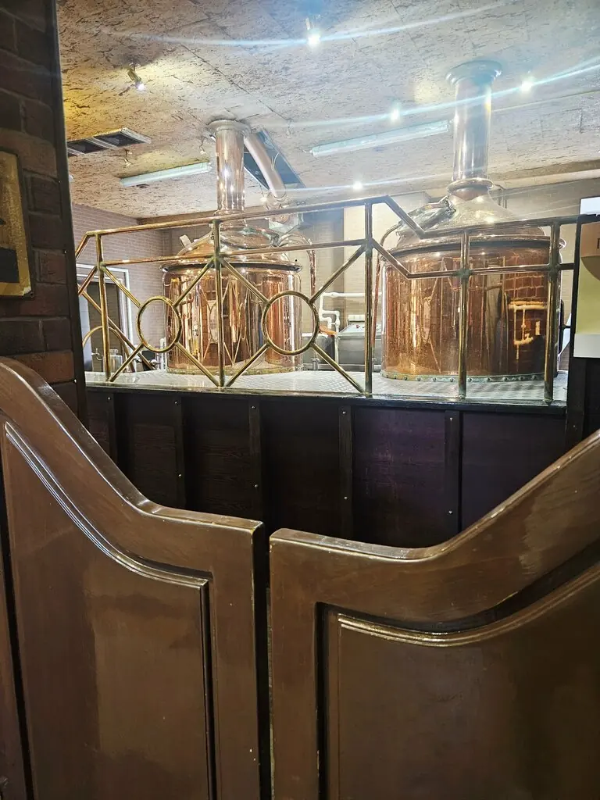
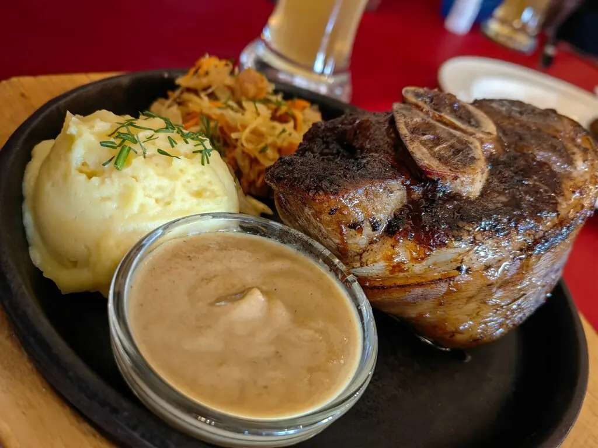
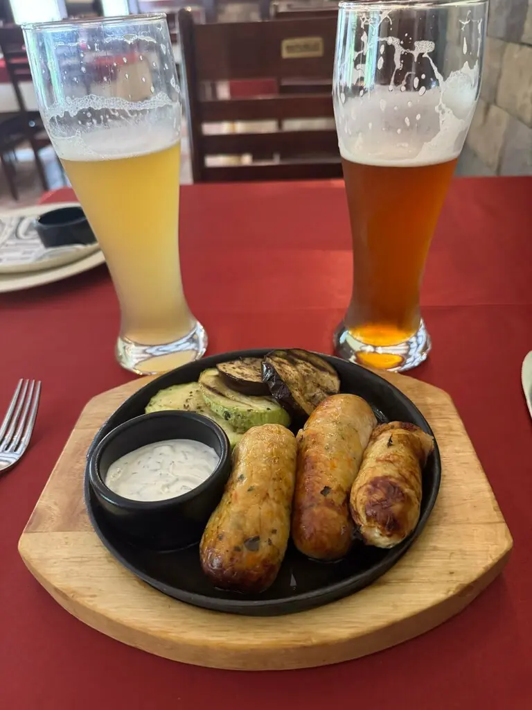
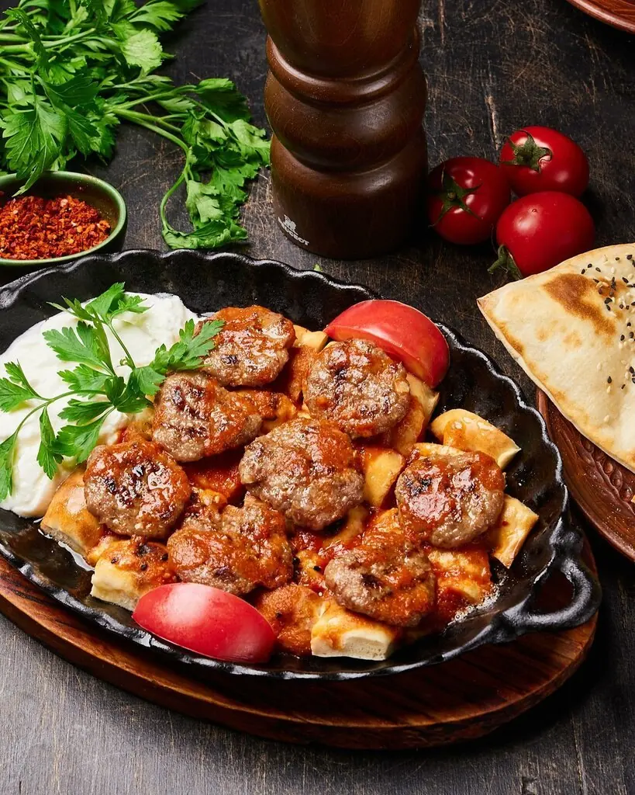

Republic
Независимая пивная республика на Борисенко. Варим своё, кормим сытно и с радостью принимаем новых граждан.
4,8 · 322 оценки

Конституция
Статья 1
Пиво варят прямо здесь, котлы видно за стеклом, а гости говорят, что оно просто мёд.
Статья 2
К пиву полагаются рёбра. Гости пишут, что они очень вкусные, а порции хорошие.
Статья 3
В заведении 140 мест, так что место найдётся и для большой компании.
Статья 4
Официанты работают быстро. По отзывам, просто метеоры.
Три сорта власти
Сорта из отзывов гостей. Полный список с ценами добавим из вашего прайса.




Народ говорит
Отличное место! Меню всё вкусное! Пиво просто мёд.Theodore
Рёбра очень вкусные, тёмное пиво понравилось. Обслуживание отличное, всё оперативно.Zatsepin Andrey
Вкусная еда! Вкусное пиво! Девчонки-официанты просто метеоры!Константин К